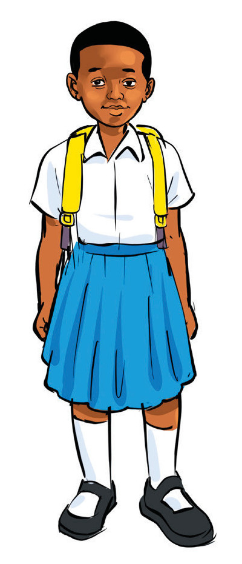
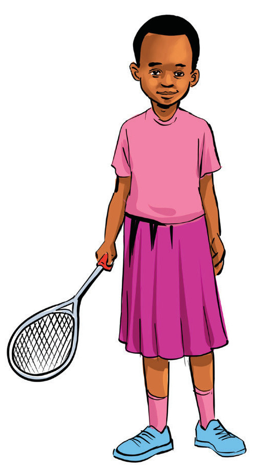

(d) Read the following texts and answer the questions that follow.
Naomi and Nyamizi’s hobbies


Naomi and Nyamizi are my neighbours. They both study at Mtani Primary School. Each of them has a different hobby. Naomi likes science subjects because she wants to become a nurse. So, she goes to the school library every Friday to read science books. Nyamizi likes sports and games particularly tennis. Because their school has no tennis court, Nyamizi trains at Mseto Primary School, a neighbouring school.